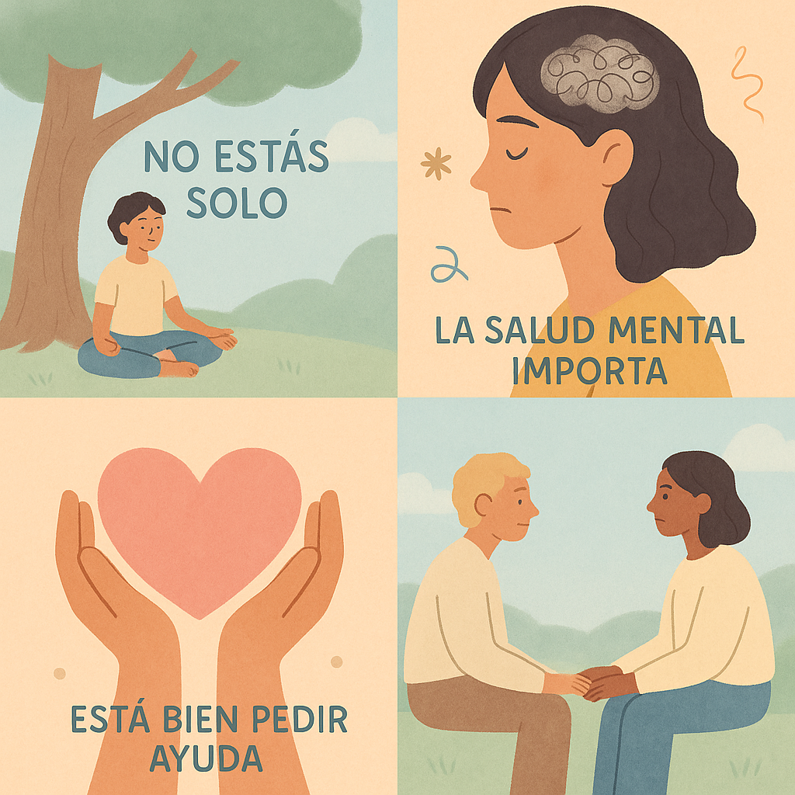

😔 Depresión
Reconocer la depresión es el primer paso. No estás solo, y buscar ayuda es una muestra de fortaleza.
Somos una comunidad que acompaña tu crecimiento personal, brindando herramientas de apoyo emocional, espiritualidad y bienestar.
El bienestar emocional es esencial para mantener la salud mental y física. Aquí encontrarás orientación y recursos para enfrentar momentos de dificultad, como la depresión, la ansiedad, el desánimo, el estrés y los problemas familiares.
Reconocer la depresión es el primer paso. No estás solo, y buscar ayuda es una muestra de fortaleza.
Aprende técnicas de respiración y mindfulness para calmar la mente y el cuerpo en momentos de tensión.
La motivación se construye paso a paso. Pequeños hábitos diarios pueden renovar tu energía.
Integra pausas activas, ejercicio ligero y momentos de descanso en tu rutina para reducir el estrés.
La comunicación abierta y el respeto mutuo son claves para resolver conflictos en el hogar.
"La calma no significa estar libre de tormentas, sino aprender a mantener la paz en medio de ellas."
Creemos que cada persona tiene un propósito único y valioso. Este espacio busca inspirarte a fortalecer tu relación con Dios, encontrar esperanza en medio de las dificultades y vivir con un sentido más profundo cada día.
Momentos de oración y reflexión que renuevan la fe y la esperanza.
Aprender a agradecer en lo cotidiano abre el corazón a la paz interior.
Frases, lecturas y mensajes que fortalecen tu espíritu y motivan tu día.
"Dios no te creó por casualidad, tu vida tiene un propósito eterno y valioso."
Materiales y guías prácticas para tu bienestar emocional y espiritual:

Descubre estrategias simples y prácticas para calmar la mente y el cuerpo.
📄 Descargar PDFRutina de ejercicios, reflexión y hábitos para mejorar tu día a día.
📄 Descargar PDFReflexiones, consejos y artículos inspiradores para tu bienestar emocional:
Conéctate con otros miembros y comparte tus experiencias:
¡Estamos aquí para ayudarte! Puedes comunicarte con nosotros por WhatsApp o correo electrónico:
Responderemos lo antes posible, tu bienestar es nuestra prioridad.